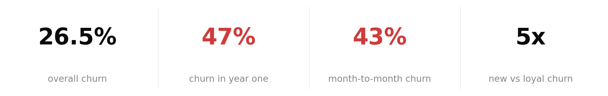
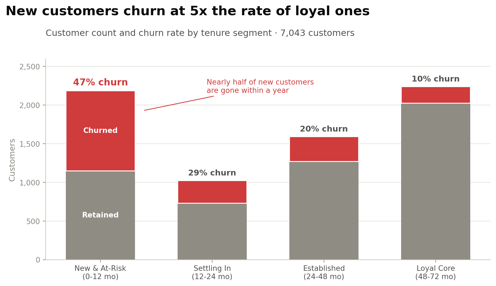
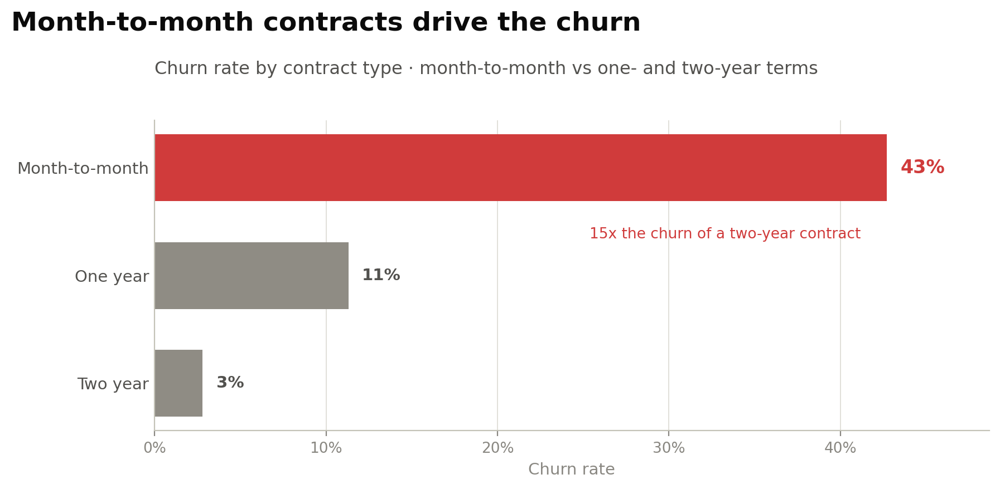

Telco Customer Churn: risk personas

The problem behind the average
A single 26.5% churn rate tells you the company has a retention problem. It does not tell you where to spend a dollar fixing it.
Splitting the base by how long each customer has been there changes the picture completely. Churn is not spread across the customer lifetime. It is concentrated at the start.

The four personas
| Persona | Tenure | Customers | Churn | Services | Month-to-month |
|---|---|---|---|---|---|
| New & At-Risk | 0 to 12 mo | 2,186 | 47% | 1.0 | 91% |
| Settling In | 12 to 24 mo | 1,024 | 29% | 1.6 | 72% |
| Established | 24 to 48 mo | 1,594 | 20% | 2.2 | 50% |
| Loyal Core | 48 to 72 mo | 2,239 | 10% | 3.2 | 15% |
The mechanism
Tenure tells you when people leave. It does not tell you why. Contract type does.
Month-to-month customers churn at 43%. Two-year contract customers churn at 3%. And 91% of the at-risk segment is on month-to-month, against 15% of the loyal core.
At-risk customers also carry 1.0 add-on services against 3.2 for loyal ones. They never accumulate a reason to stay.

The obvious objection
Someone will say the contract finding is circular. People who commit to two years are people who were going to stay anyway, so of course they churn less.
That is a fair challenge and it is partly true. What it does not explain is the service count. At-risk customers hold a third of the add-ons that loyal ones do, and add-ons are a choice made after signing, not at signup. The stickiness is being built or not built during the first year, whichever contract someone is on.
What I checked before publishing
The dataset is a public teaching set, not a live business. It is a well-known Kaggle set of 7,043 customers. The method transfers. The specific numbers describe this file, not any real company.
Tenure and contract are correlated, so they are not independent explanations. The personas describe the shape of the problem. They are not a causal model and I have not claimed one.
The persona boundaries are my choice. 12, 24 and 48 months are round numbers that match how a business plans, not breakpoints the data forced. A different cut would move the percentages. The pattern holds either way, which is the part worth trusting.
Why it looks like this
Four figures across the top, not the full table. A recruiter or a manager reads the top strip and stops. Those four have to carry the whole story on their own, so they are the overall rate, the first-year rate, the mechanism, and the multiple.
The persona chart shows counts and rates together. A rate on its own invites the question of how many people it covers. Showing both stops the reader having to ask.
Tenure comes before contract, and that order is deliberate. Contract type is the more useful finding, but it lands harder once you already know the loss is concentrated in year one. Leading with the mechanism would have made it a fact rather than an answer.
It is a Tableau story, not a single dashboard. Three findings in sequence, each one setting up the next. A single screen would have shown all three at once and let the reader assemble the argument themselves, or not.
What follows from it
Every recommendation targets the 0 to 12 month window, because that is where the loss concentrates. Move customers off month-to-month early, get add-on services attached in the first quarter, and treat the first year as onboarding rather than as billing.